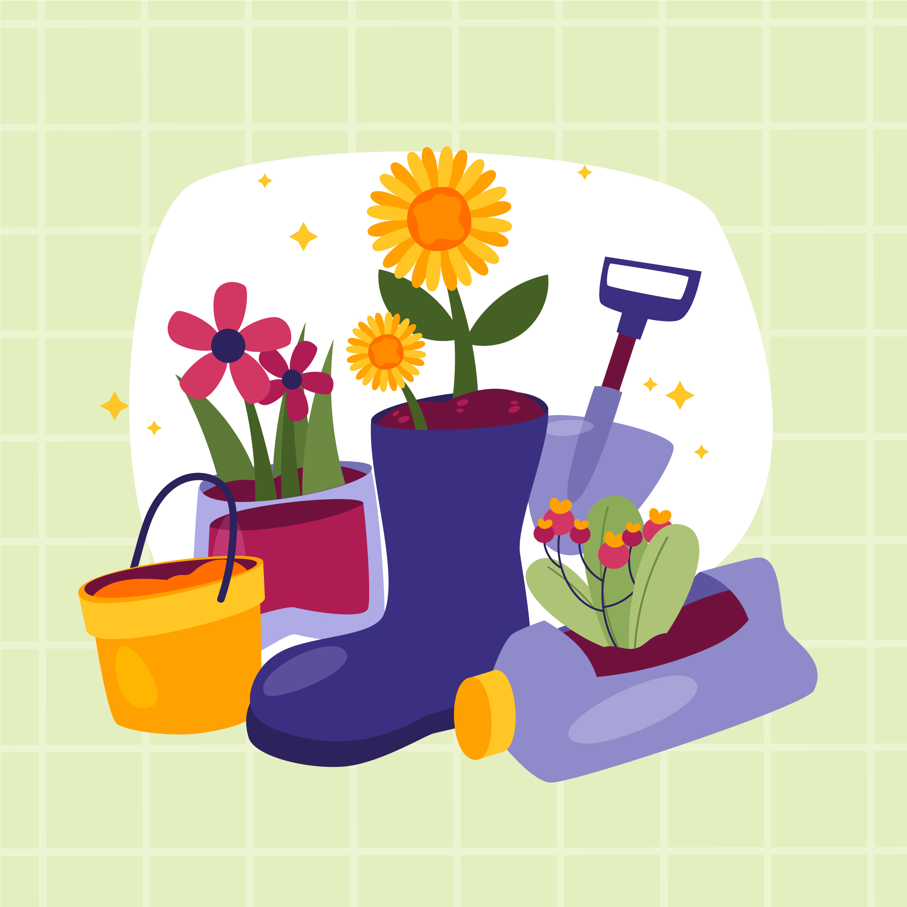
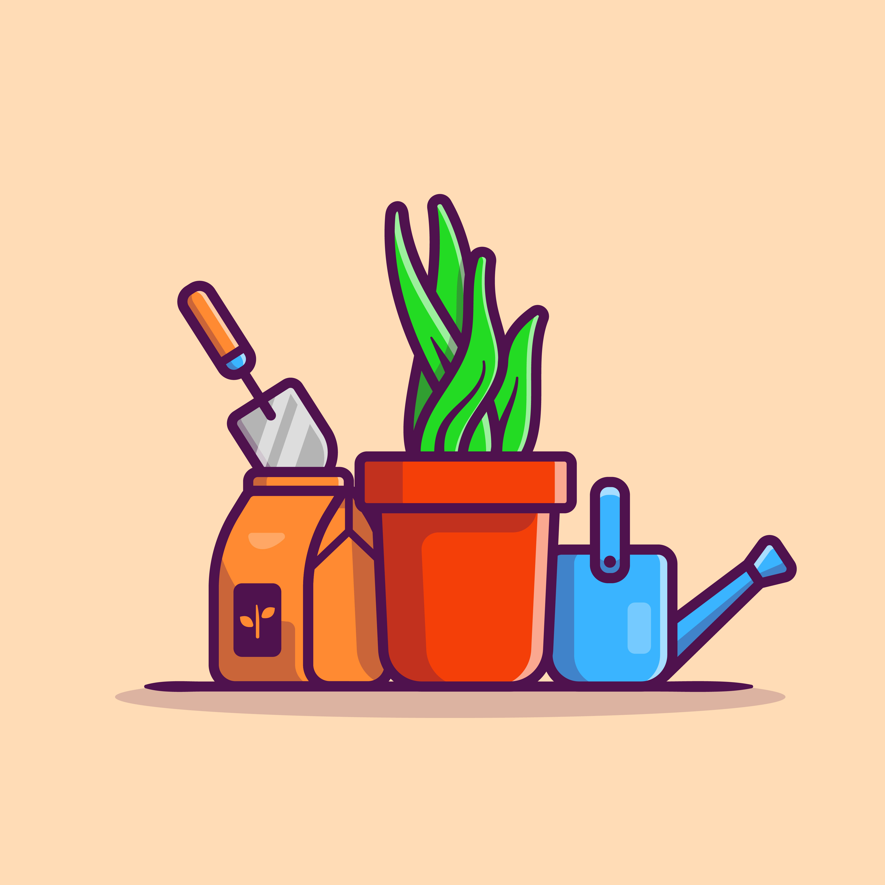
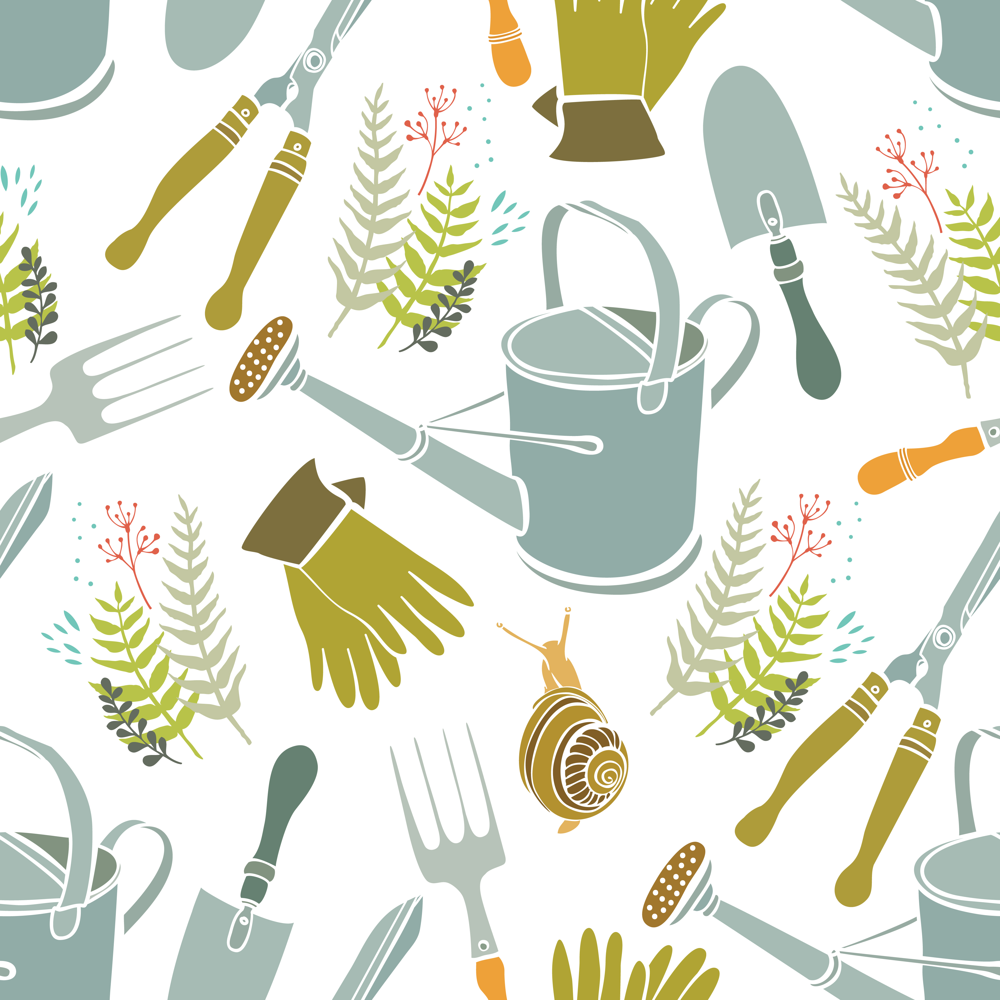

Étape 1 : Préparer le sol
Choisissez un endroit ensoleillé.
Nettoyez les mauvaises herbes.
- Retirez les pierres.
- Aérez la terre.

Étape 2 : Planter les graines
Faites des petits trous.
Placez les graines dedans.
- Recouvrez légèrement de terre.
- Tassez doucement.

Étape 3 : Arroser
Arrosez doucement.
Ne mettez pas trop d’eau.
- Arrosez le matin.
- Surveillez la terre.

Étape 4 : Récolter
Attendez que les légumes soient mûrs.
Coupez proprement.
- Ne tirez pas trop fort.
- Rangez les outils.
